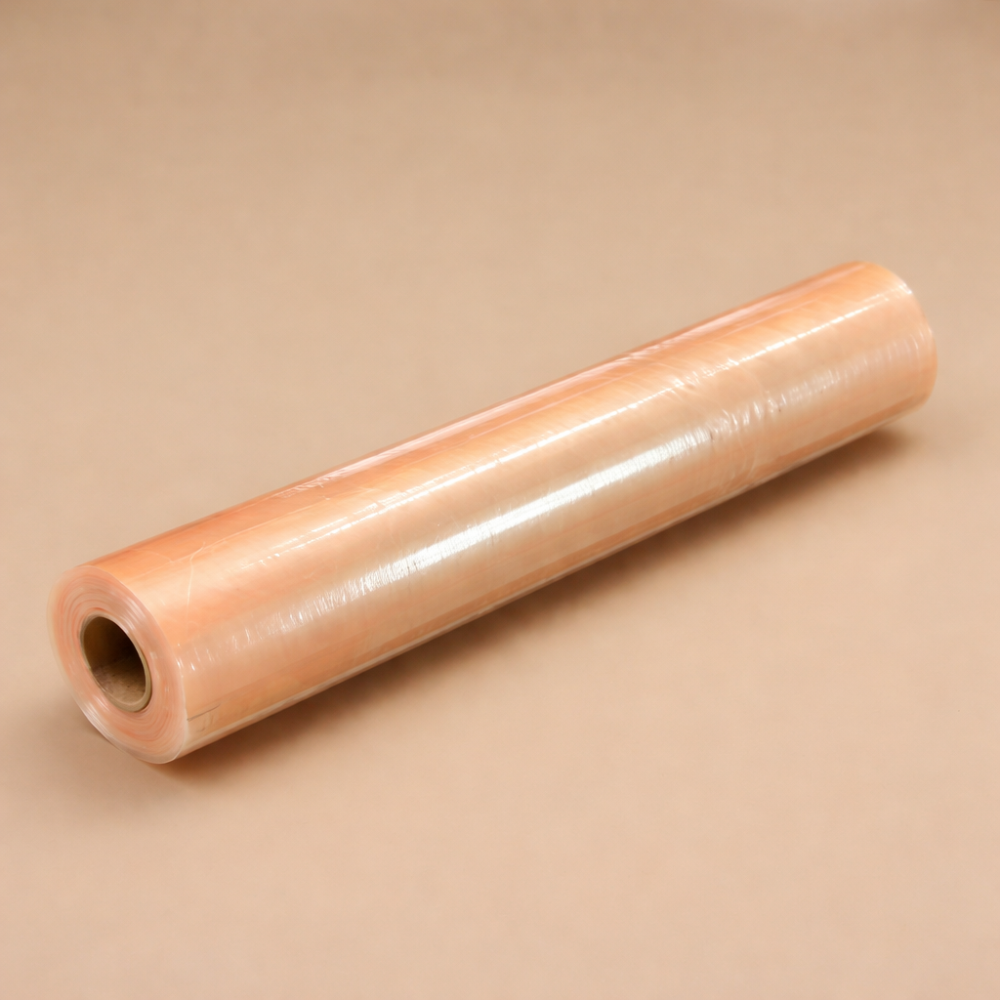
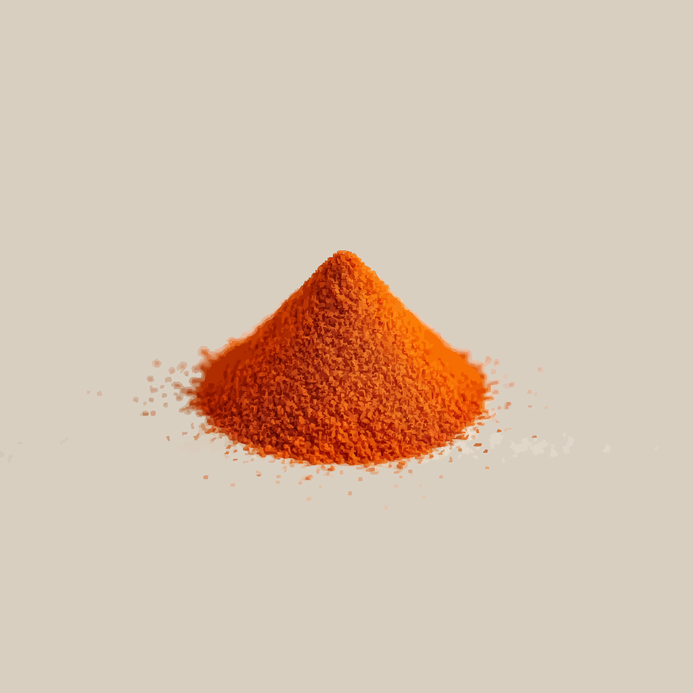

EU / UK

Compliance Summary Report
ViKANG 99 PBAT Antimicrobial Home-Compostable Cling Wrap
N&E Innovations | February 2026
Clear, factual overview of EU regulatory status (Germany, France, UK), supported by independent testing and ECHA-relevant classification logic.
Executive Summary
N&E Innovations presents the ViKANG 99 PBAT Antimicrobial Cling Wrap: a thin, flexible, transparent pale-brown film designed for food wrapping and surface protection. It combines biodegradable PBAT with embedded photocatalytic iron-oxide technology to deliver antimicrobial surface activity without chemical release.
The product is fully compliant with all relevant EU regulations for food contact, chemical safety, biocidal treated articles, and packaging waste. Recent SGS testing (February 2026) confirms complete compliance, and the film carries OK Compost HOME certification from TÜV Austria.
Feb 2026
OK HOME
1. Product & Technology Overview
What is the ViKANG 99 Cling Wrap?
A single-use, high-performance PBAT film with built-in antimicrobial properties. It is thin (0.01 mm), highly stretchable, and transparent pale-brown, ideal for food wrapping and surface protection.
Core Components
- Base material: PBAT (polybutylene adipate terephthalate) — a biodegradable polyester made from renewable sources.
- Active technology: ViKANG 99 — a natural iron-oxide photocatalyst fully embedded into the film during extrusion (no surface coating or releasable substances).
How ViKANG 99 Works
When exposed to ordinary light, the embedded iron oxide generates Reactive Oxygen Species (ROS/free radicals) from ambient air and humidity. This creates a mild acidic environment on the film surface that disrupts bacterial and viral cell membranes — without any chemical migration into food.
Origin of ViKANG 99 – Cashew Shell Valorisation
ViKANG 99 is produced from cashew nut shells, an agricultural by-product that would otherwise be waste. The process turns this waste into a high-value photocatalytic powder with very low CO₂ emissions (approximately 0.8–1.2 kg CO₂eq per kg of ViKANG 99).
 Raw cashew nut shells
Raw cashew nut shells

Processed ViKANG 99 powder Film extrusion process (embedding stage)
Film extrusion process (embedding stage)
Scientific Basis
The photocatalytic mechanism is based on Fenton and Haber-Weiss reactions with iron oxides under light exposure.
- Wydra et al. (2015) – RSC Advances — DOI: 10.1039/C4RA13564D
- Wu et al. (2014) – Journal of Food and Drug Analysis — DOI: 10.1016/j.jfda.2014.01.007
2. Regulatory Classification
Classification
The product is classified as a treated article under Article 3(1)(a) second indent of the Biocidal Products Regulation (BPR):
“‘treated article’ means any substance, mixture or article which has been treated
with, or intentionally incorporates, one or more biocidal products;”
Why Case-Type 4?
- The antimicrobial effect (ROS/free radicals) is generated only in the final article from ambient air and water when exposed to light.
- No separate biocidal mixture, precursor, or coating is placed on the market.
- The iron-oxide catalyst is fully embedded during manufacturing.
- This matches ECHA’s Case-Type 4 for in-situ generated active substances. No Article 95 listing required during the transitional period (Article 93 BPR).
Consequence
No Article 95 listing or national notification required during the transitional period (Article 93 BPR).
3. Regulatory Compliance Overview
| Regulation | Scope | Status | Key Evidence (February 2026) |
|---|---|---|---|
| (EC) No 1935/2004 + (EU) No 10/2011 | Food contact materials (all simulants incl. olive oil) | PASS | SGS Report No. 10621484 (26 Feb 2026) |
| REACH (EC) No 1907/2006 | SVHC in finished article (251 substances) | PASS | SGS Report No. 10621484(1) (25 Feb 2026) |
| BPR (EU) No 528/2012 | Treated article (Case-Type 4) | Compliant | Internal analysis + ongoing evaluation |
| OK Compost HOME (TÜV Austria) | Home compostability | Certified | TÜV Austria Certificate |
| PPWR (EU) 2024/40 | Packaging waste & compostability claims | Compliant | Certification + labelling ready |
4. Product Properties
Technical Highlights (TDS – 1 June 2025)
0.01 mm (10 µm)
−40 °C to +110 °C
26.7 / 15.3 MPa
Home Compostable: Certified OK Compost HOME (TÜV Austria). The film fully biodegrades in a typical garden compost heap (20–30 °C) within 12 months, leaving no microplastics or toxic residues.
5. Available Compliance Documents
All documents are available upon request. Click to open or request from Regulatory.
6. Sources & References
Scientific Sources
- Wydra et al. (2015) – RSC Advances — DOI: 10.1039/C4RA13564D
- Wu et al. (2014) – Journal of Food and Drug Analysis — DOI: 10.1016/j.jfda.2014.01.007
Regulatory / Testing Reports & Documents
- SGS Food Contact Report (full EU compliance, all simulants) – No. 10621484 (26 Feb 2026)
- SGS REACH SVHC Report (251 substances on finished film) – No. 10621484(1) (25 Feb 2026)
- OK Compost HOME Certificate – TÜV Austria
- Declaration of Compliance (DoC) – signed by EU Responsible Party
- Technical Data Sheet (product properties) – 1 June 2025
Conclusion
The ViKANG 99 PBAT Antimicrobial Cling Wrap is a safe, sustainable, and fully compliant solution for food retailers. With complete EU food-contact testing, current REACH compliance, home-compostable certification, and treated-article status under BPR, it is ready for immediate market placement in Germany, France, and the UK.
We are happy to provide any additional documentation or arrange a call with our regulatory team.
Contact
Darioush Kottke
Regulatory & Compliance
N&E Innovations
Email: business@vi-kang.com